Fullstack product engineer
Строю продукты целиком — от интерфейса до денег и ИИ-агентов. Пишу с ИИ, думаю сам.
Как я пишу код вместе с ИИ — и почему это не вайбкодинг.
ИИ пишет код. Решения принимаю я.
Вайбкодинг — это когда разработчик не знает, что сгенерировала модель. Майндкодинг — мой термин для обратного: знаешь и отвечаешь за каждую строку.
Агенты ускоряют работу, но архитектура, модель данных, деньги и права доступа остаются под моим контролем. За этим — годы разработки руками: я вижу, когда модель уверенно ошибается.
Продукты, где я вёл интерфейс, бэкенд и интеграции. Полный разбор — под раскрытием.
Модульная SaaS-платформа для управления компанией и продуктовой разработкой.
MetaForge объединяет проекты, задачи, сотрудников, клиентов, документы, коммуникацию и внутренние инструменты компании в одной системе. Доступ к данным и возможностям платформы формируется индивидуально для каждого сотрудника — от его роли, проектов и лицензии компании.
Поверх этого рабочего контекста встроен ИИ: он получает только разрешённые конкретному пользователю данные и может не только отвечать на вопросы, но и выполнять действия внутри платформы.
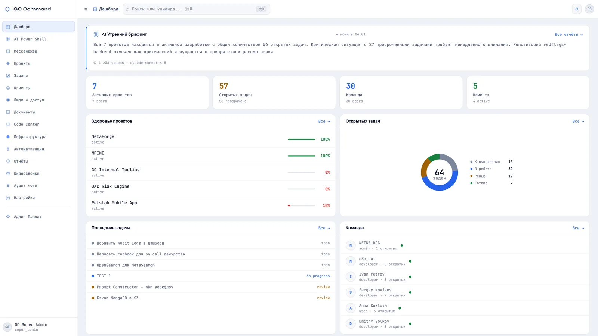
Каждая компания может хранить данные в своей MongoDB или PostgreSQL.
Отдельная база на компанию, единый интерфейс данных для бизнес-модулей и разделение на уровне серверных подключений.
Ассистент работает с данными компании и может выполнять действия в платформе.
Права проверяются на бэкенде до выполнения запроса, и по той же модели собирается контекст для ИИ — разработчик не получит через ассистента финансы компании.
ИИ-среда разработки должна показывать работающий результат, а не только файлы.
Отдельный Docker-контейнер на сессию, доступ только у владельца, неактивные окружения удаляются автоматически.
MetaForge построен как модульная система: компания подключает только нужные ей возможности — от проектов и финансов до мессенджера, звонков, автоматизации и ИИ-инструментов. Недоступные по лицензии модули полностью исключаются из рабочего пространства.
Внутри подключённых модулей доступ дополнительно регулируется ролями. В результате администратор, менеджер, бухгалтер и разработчик работают с одной платформой, но получают разные данные, действия и уровень контроля.
Права пользователя определяются не только интерфейсом. Backend проверяет доступ к модулям, действиям и данным до выполнения запроса. Роль задаёт, что сотрудник может видеть, создавать и изменять, а область видимости дополнительно ограничивает данные его проектами и зоной ответственности.
Эта же модель используется ИИ. Например, разработчик не сможет получить через ассистента финансовые показатели компании или информацию о чужих проектах: такие данные просто не включаются сервером в доступный ему контекст.
Каждая компания работает в собственном пространстве данных. Центральная база MetaForge хранит настройки платформы и лицензии, а рабочие данные конкретной компании находятся в её отдельной базе и подключаются только в контексте соответствующей организации.
Компания может использовать MongoDB в инфраструктуре MetaForge либо подключить собственную MongoDB или PostgreSQL. Для бизнес-логики разница скрыта за единым интерфейсом работы с данными. Доступ к данным разных компаний дополнительно разделён на уровне серверных подключений и подписанных внутренних операций.
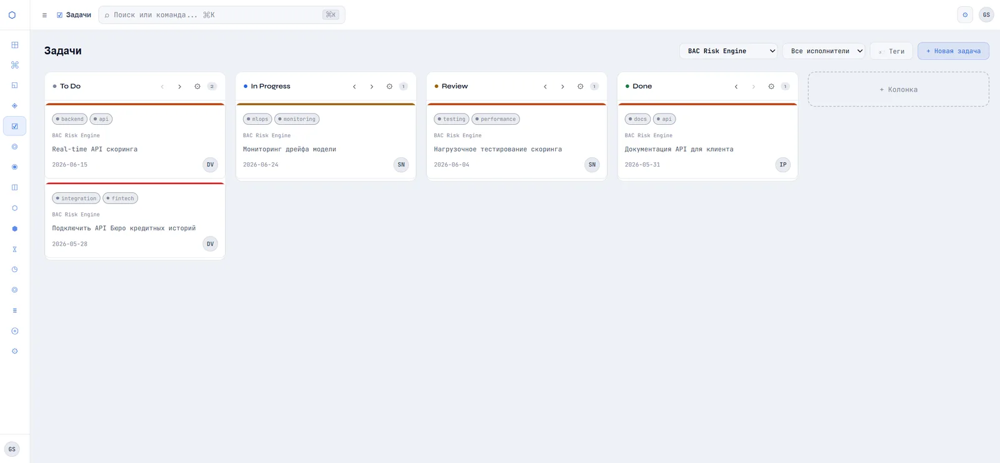
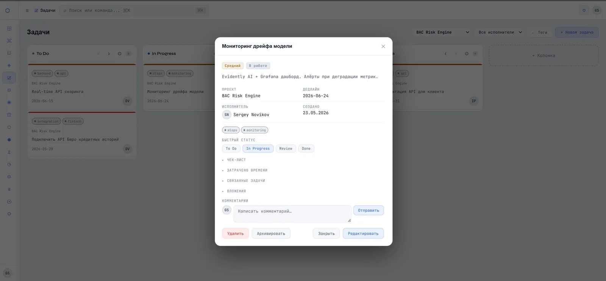
Запрос пользователя сначала классифицируется сервером: это может быть вопрос о данных компании, команда на выполнение действия или задача по работе с кодом. После этого система собирает только тот контекст и набор возможностей, которые разрешены роли пользователя.
Поэтому ИИ работает не как отдельный чат поверх приложения, а как интерфейс к самой платформе: он понимает доступные пользователю проекты и данные и может выполнять разрешённые действия в этом же контексте.
В MetaForge встроена собственная среда для работы с ИИ над кодом. Пользователь может описать новый проект или поставить задачу по существующей кодовой базе, а система проводит её через несколько этапов анализа, реализации и проверки.
Работать можно с новым проектом, загруженными файлами или подключённым Git-репозиторием. Разным этапам обработки можно назначать разные ИИ-модели в зависимости от их задачи.
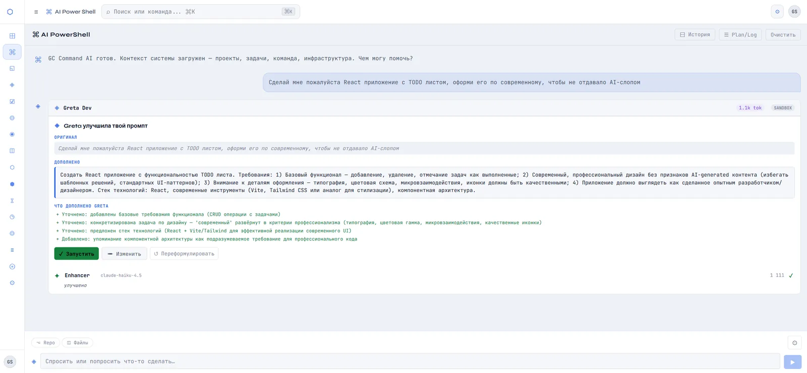
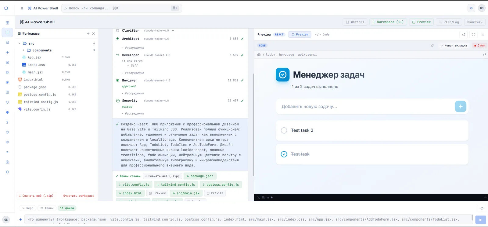
Вместо одного длинного запроса задача проходит через несколько специализированных этапов. Один этап уточняет требования, другой проектирует решение, следующий работает с кодом, а последующие проверяют результат.
Каждому этапу можно назначить подходящую ИИ-модель. Результаты последовательно передаются дальше и перепроверяются, а при обнаружении проблемы задача может вернуться на доработку. Это уменьшает вероятность накопления ошибок в длинных и многошаговых задачах.
Сгенерированный код можно запустить непосредственно из MetaForge. Для сессии создаётся отдельное Docker-окружение, внутрь которого устанавливаются зависимости и запускается проект. Результат открывается пользователю как живой предпросмотр прямо в интерфейсе.
Контейнер изолирован от других пользовательских сессий и доступен только авторизованному пользователю. Если работа прекращается, неактивное окружение автоматически удаляется, поэтому зависимости и временные файлы не накапливаются в постоянном хранилище.
MetaForge использует рабочие данные платформы для автоматической отчётности. Содержание формируется с учётом роли и зоны ответственности пользователя: сотруднику нужен собственный рабочий контекст, руководителю — состояние команды и проектов, администратору — более широкий обзор компании.
Через n8n данные о задачах, репозиториях и других событиях можно объединять в автоматические сценарии: анализировать состояние проектов, отслеживать изменения и запускать проверку кода без ручного сбора информации из нескольких сервисов.
Файловое хранилище также абстрагировано от конкретного провайдера: MetaForge может использовать MinIO по умолчанию либо подключённое компанией S3/GCS-совместимое хранилище.
Встроенный мессенджер работает в реальном времени через WebSocket.
MetaForge объединил в одном проекте несколько разных инженерных задач: архитектуру мультитенантного SaaS, сложную модель доступа, realtime-функции, работу с несколькими типами хранилищ, интеграцию ИИ с корпоративными данными и собственную среду исполнения сгенерированного кода.
В результате получилась не просто административная панель с ИИ, а модульная техническая основа, на которой можно развивать разные процессы и инструменты компании.
От сайта токена до полноценной GameFi-платформы.
NFINE начинался с публичного сайта токена с собственной визуальной идентичностью и актуальными рыночными данными. Следующим этапом стала GameFi-платформа для Telegram, Web и Android с собственной экономикой, социальными функциями и crypto-интеграциями.
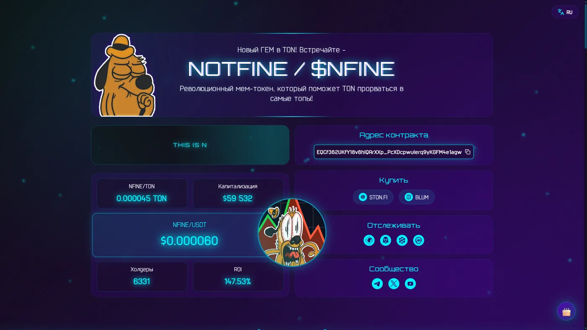
Игровые награды, донаты, обмен валют и пополнения из блокчейна меняют одни и те же балансы.
Все изменения идут через типизированные операции и единый журнал транзакций — любую операцию можно проследить от блокчейна до баланса.
Пользователи платят и выводят в TON, USDT и NFINE прямо внутри Telegram Mini App.
Собственный платёжный шлюз: пополнения, конвертация и вывод проходят один путь — шлюз → заявка → финансовый сценарий → журнал.
Чаты, кланы и ежедневные механики должны работать без перезагрузки и ручного вмешательства.
WebSocket для личных и групповых чатов, воркеры для blockchain-проверок, ежедневных заданий, streak-механик и автоматической выдачи наград.
Публичная точка входа в NFINE: информация о токене, актуальные данные рынка, адрес контракта, ссылки на покупку и материалы для новых участников проекта.
После запуска сайта NFINE вырос в полноценный пользовательский продукт — GameFi-приложение с собственной экономикой, социальными механиками и crypto-функциями.
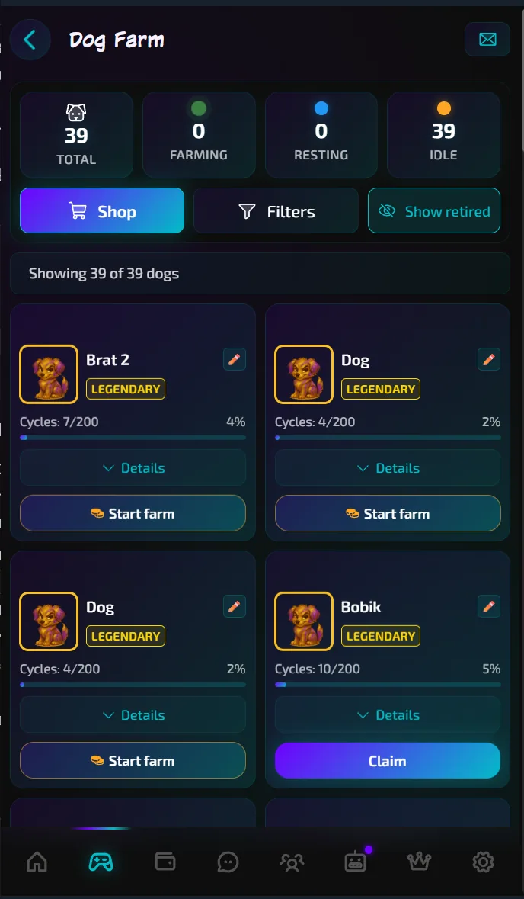
Коллекционные собаки — это игровой источник дохода: фарминг превращает активность в приложении в валюту, которая работает во всей экосистеме — от покупок в магазине и участия в других активностях до доступа к utility-функциям продукта, включая AI-ассистентов и VPN.
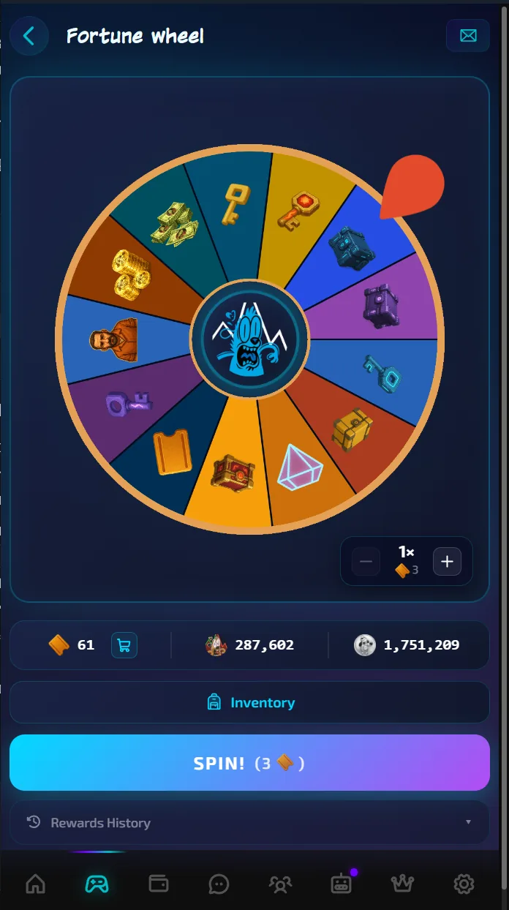
Награды встроены в каждый слой продукта: ежедневный вход в приложение, колесо фортуны, открытие кейсов, ежедневные и сезонные задания, личные достижения и активность внутри клана — все источники работают на общий прогресс игрока.
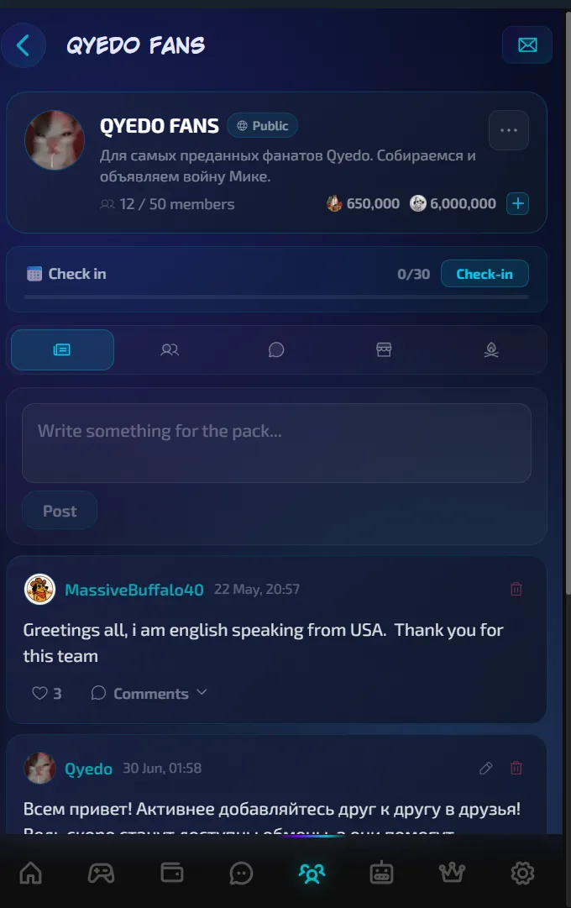
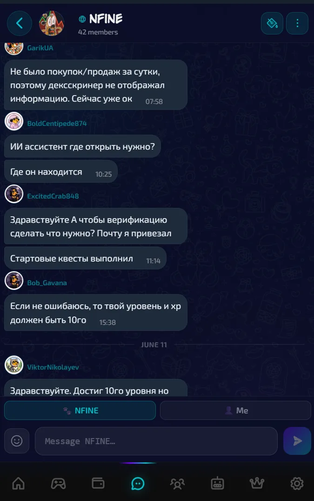
Общение работает на двух уровнях: личные и групповые чаты во встроенном мессенджере — и сообщества, которые пользователи создают и прокачивают за внутреннюю валюту. Доступ гибко настраивается — от закрытых, куда приглашает лидер, до открытых для всех, — а право публиковать посты лидер выдаёт отдельным участникам.
Совместная активность в сообществе усиливает личный прогресс: групповой фарминг приносит больше валюты, опыта и репутации клана, а также пополняет казну, которую можно тратить на его развитие. Отдельно работают личные связи — друзья, обмен предметами и валютой, а также трёхуровневая реферальная система, превращающая приглашённых пользователей в источник пассивного дохода.
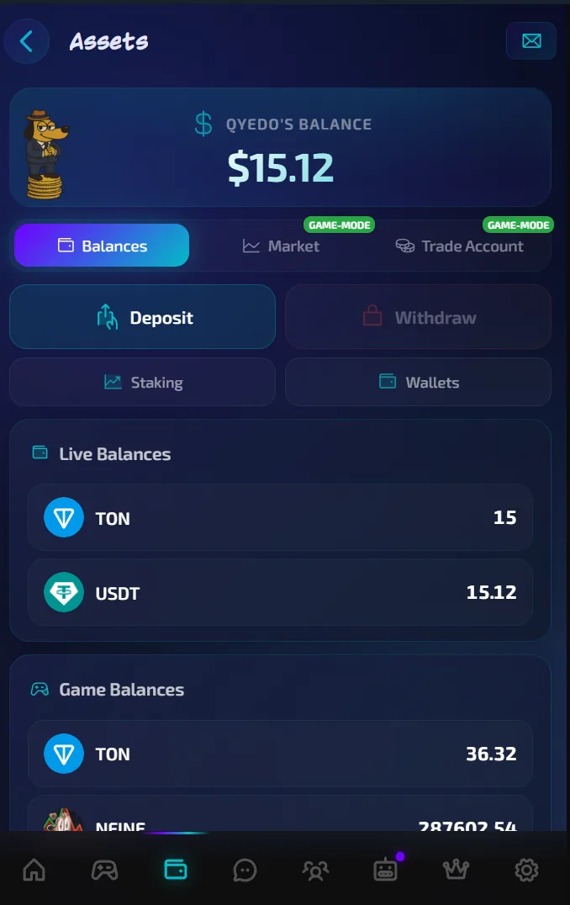
TON, USDT и NFINE работают через единый платёжный слой с собственным шлюзом: донаты, конвертация валют и доступ к встроенной P2P-бирже с плечом, где пользователи открывают позиции и торгуют токенами из разных сетей.
Активность в приложении — квесты и участие в игровых механиках — повышает квоту на вывод. Заработанное можно вывести или потратить внутри экосистемы: на utility-функции токена, включая AI-ассистентов, VPN и аудиты от команды проекта.
За пользовательскими механиками NFINE находится полноценная fullstack-система: отдельная архитектура клиентского приложения, асинхронный backend, единая модель финансовых операций, realtime-коммуникация и фоновые процессы. Компоненты разделены по зонам ответственности, поэтому новые механики можно добавлять поверх существующего ядра без необходимости переписывать весь продукт.
Игровые, торговые и платёжные механики используют общие сервисы и правила работы с данными. Благодаря этому новые функции можно подключать к существующей экономике, а не создавать для каждой отдельную систему учёта.
NFINE потребовал работы сразу на нескольких уровнях: от интерфейсов и пользовательских сценариев до серверной архитектуры, финансового учёта, realtime и crypto-интеграций. В результате проект получил не набор отдельных функций, а единое приложение с общим техническим ядром, поверх которого можно развивать новые игровые и продуктовые механики.
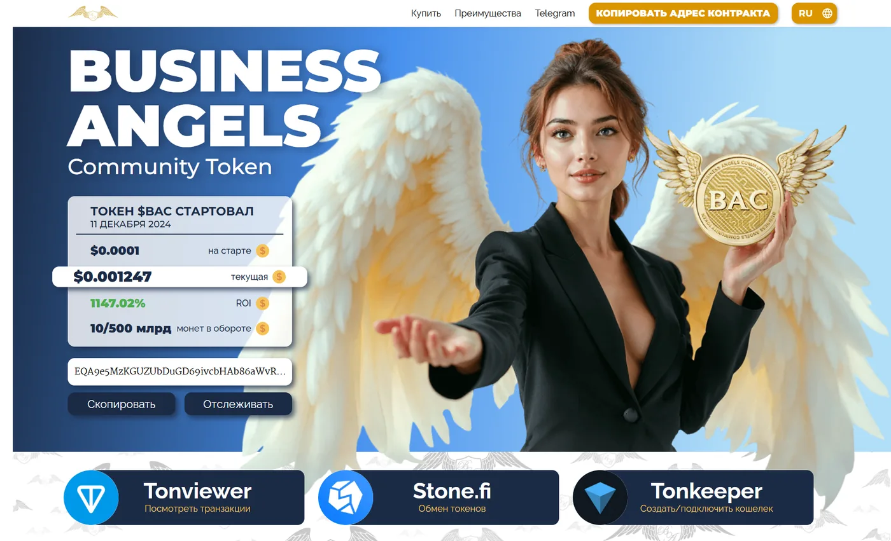
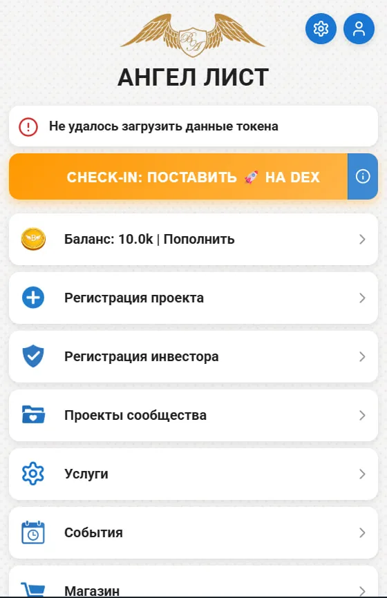
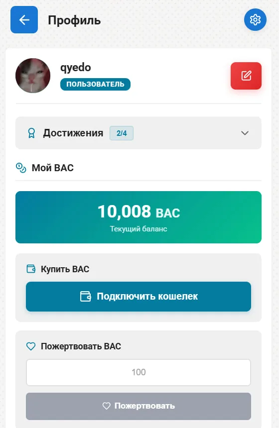
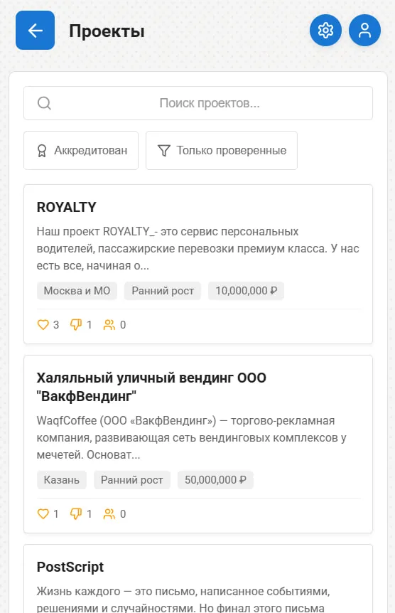
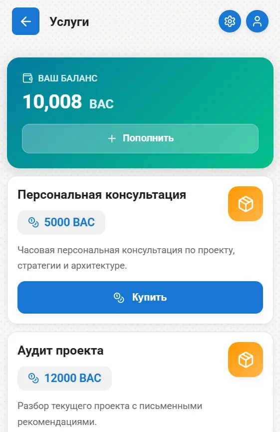
Web3-продукт для Business Angels Community: публичный сайт токена и Telegram Mini App с собственной серверной частью и экономикой.
Приложение объединяет автоматическую регистрацию через Telegram, пользовательские балансы, пополнение через crypto-платёжный шлюз, внутренний магазин и сценарии для участников сообщества — от регистрации собственных проектов до подключения в роли инвестора.
Токен BAC используется внутри продукта как utility-валюта для покупки услуг и других возможностей платформы.
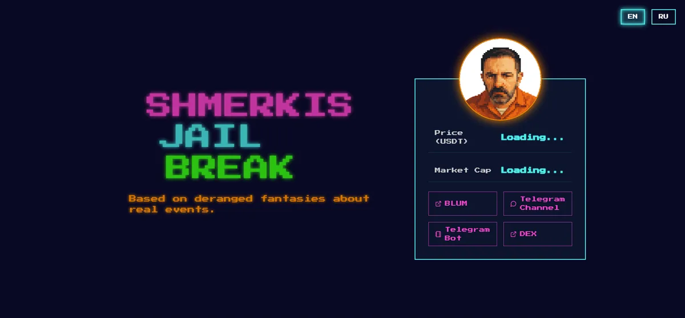
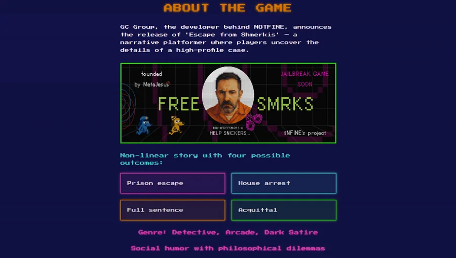
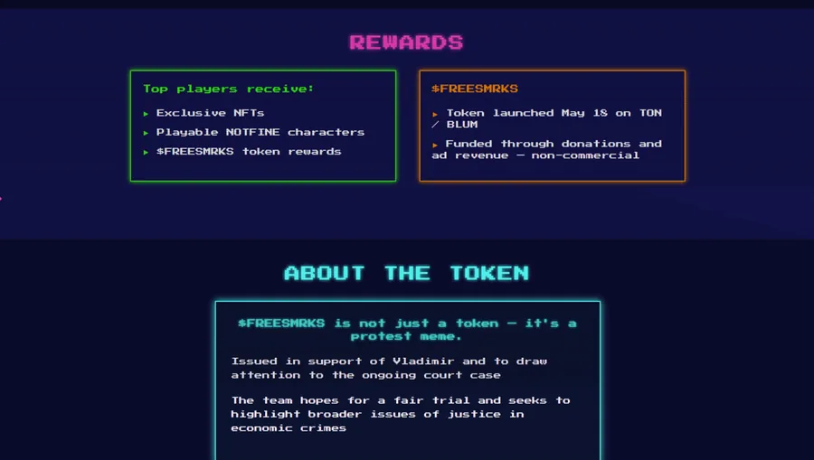
Публичный сайт для запуска crypto-токена с собственной визуальной концепцией и интерактивной подачей проекта.
Разработал дизайн и frontend на React: презентация токена, основная информация о проекте и быстрые переходы к связанным площадкам и сообществу.
Часть коммерческих проектов нельзя опубликовать полностью. По некоторым могу показать материалы лично, по другим — рассказать об архитектуре и своей роли.
Сгруппировано по задачам, а не по языкам.
Большие React-приложения с централизованным состоянием, защищёнными маршрутами и единым API-слоем.
TypeScript · React · MobX · Redux · Zustand · React Router · Tailwind CSS · SCSS Modules
Модульный монолит на Go, асинхронный FastAPI, realtime через WebSocket и фоновые воркеры.
Go · chi · Python · FastAPI · Pydantic · Motor · REST API · WebSocket · JWT
Платёжный слой для пополнений, обмена и выплат: каждая операция фиксируется в журнале транзакций.
TON SDK · Payment gateway · Transaction ledger · TX indexing · Wallet deep-linking · USDT
Конвейер агентов, контекст по правам пользователя, единый шлюз к провайдерам и изолированный запуск сгенерированного кода.
Claude Code · Codex · LLM orchestration · Multi-agent pipeline · Claude · OpenAI · DeepSeek · Grok · Docker sandboxes · n8n
Мультитенантность с отдельной базой на компанию и файловое хранилище, не привязанное к провайдеру.
MongoDB · PostgreSQL · SQLite · MinIO · S3 / GCS
Одно приложение для Telegram, Web и Android; Docker и Git-интеграции.
Telegram Mini Apps · Web · Android WebView · Desktop · Docker · Git · Gitea · GitLab